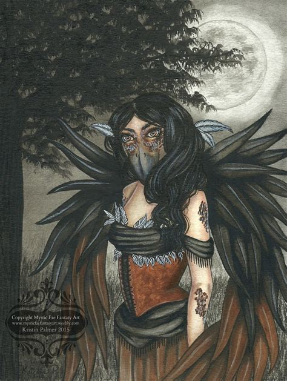

Mexican folklore is filled with twisted tales of wild beasts, wicked witches, and medicine men—often served up with a pinch of Aztec mythology weaved in. The terrifying tales they tell South of the border rarely make it up to those of us in the United States, the legends always stand out for their unusually spooky elements. We all know the tragic tale of La Llorona. Most of us have also heard of duendes, and their creepy behavior. What many folklore fans might not know about, though, is the wicked witch known as la lechuza.
La lechuza is the Spanish phrase for “the barn owl,” and in Mexican folklore, it describes a witch who is capable of turning into a giant owl. During the daytime, la lechuza looks like a totally normal woman. At night, if she so chooses, she turns into a monstrous owl that flies through the air and attacks those she dislikes. According to the legend, people who are unlucky enough to run into the witch in her transformed state will see her appear as a massive, pitch black owl gazing down upon them. If la lechuza just appeared like an ordinary owl, it wouldn’t be too terrifying. However, what makes her so uniquely horrific is that she has the head of a twisted, decaying old woman. The worst part about it is that there isn’t just one lechuza, but rather, an entire cabal of women who have the ability to shapeshift into owls. So, there’s a chance that they could hunt in packs.

Many Mexican folk tales have a pretty set-in-stone origin, but the story behind la lechuza isn’t one of them. This is one of the few legends floating around Mexico that doesn’t really have a solid backstory behind it. No one knows how the legend got started, or why la lechuza even exists. There are several explanations as to why this creature (or type of witch) exists. All that we know for sure is that rumors of the “barn owl” have been discussed prior to the age of the conquistadors. Some believe that lechuzas are women who were murdered by their lovers, and live to seek revenge on those who wronged them. Others believe that the origin of la lechuza is simply dark magic taken to an extreme level. One of the more popular origin stories involving la lechuza suggests that lechuzas are women who practiced witchcraft, but were exposed by villagers. After villagers killed the witches, lechuzas swore to seek revenge on the people who harmed them—and anyone else who got in their way.
The fearsome appearance of a lechuza isn’t the only reason to fear these flying witches. Legend states that they feast on people, and that they attack people in order to feed themselves. Some even suggest that these witches will go so far as to lure people out of their homes with the right noises. Lechuzas’ talons are very large, and are capable of taking a fully-grown man off the ground while in flight. Sightings suggest that they can even pick up and try to carry a car if they are hungry enough to do so. A lechuza’s hunger knows no bounds, and she will do anything to hunt down victims for her next feast.
Recent reports of lechuza sightings also added a new aspect to the legend that wasn’t there before. According to people who have claimed to see la lechuza in real life, these witches have the ability to drain a car’s battery in order to render a person helpless on the road. Considering how a classic aspect of la lechuza’s powers involve the ability to control thunder and lightning, there may be a connection here. Maybe these witches have a special connection to electricity.
One of the more positive(?) rumors about la lechuza deals with the people she chooses to attack. According to this rumor, la lechuza only attacks people who have done evil things to women or who have evil in their hearts. If you see a lechuza and she doesn’t attack you, it means that she’s there to warn you of tragedy. Even so, the vast majority of people who had close run-ins with la lechuza never seem to live long after.